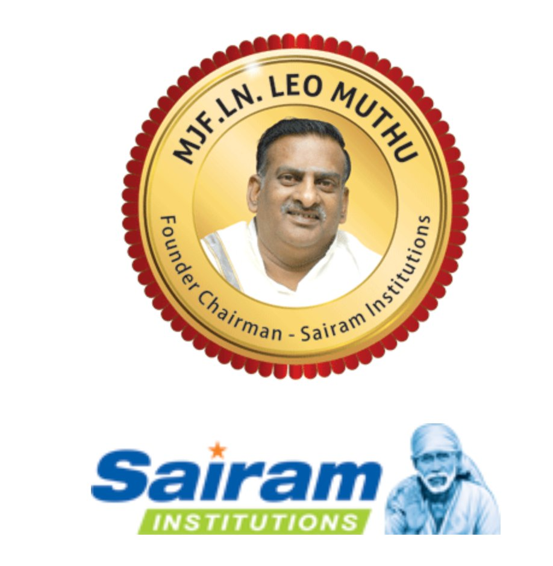

Empowering future engineers through world-class technical education, 20 IEEE Student Branch Chapters, and ethical leadership founded in 1997.
Sri Sairam College of Engineering, located in Bengaluru and founded in 1997 by MJF.Ln.Leo Muthu, Chairman of Sapthagiri Educational Trust, stands as a prominent non-profit and non-minority educational institution. It has a clear vision, a committed mission, and effective leadership, positioning it among the top educational establishments in the nation.
Over the years, the college has expanded significantly, boasting impressive infrastructure spread across a sprawling green campus in Anekal, Bengaluru. This includes modern buildings, well-equipped laboratories, advanced internet centers, a digital library block, and a comprehensive sports complex, all of which have become notable landmarks. The campus features architecturally appealing structures, auditoriums, hostels, gymnasiums, and vast sports grounds, providing students with a conducive environment for learning and holistic development.
The IEEE Student Branch at Sri Sairam College of Engineering (STB60209825), operating under the IEEE Bangalore Section (Region 10), serves as a vibrant hub for technical excellence, research publications, and professional networking. With 20 active IEEE Society and Council Student Branch Chapters and the IEEE Women in Engineering (WIE) Affinity Group (SBA60209825), the branch empowers students to advance technology for humanity.

"To Inspire, Enable, Empower, and Energize our student members to enhance their technical interests by providing a premier platform to showcase engineering excellence and foster global research leadership."
Visionary leaders guiding Sri Sairam College of Engineering and IEEE Student Branch STB60209825.
Established the Sapthagiri Educational Trust in 1997, pioneering state-of-the-art engineering institutions dedicated to academic rigor, discipline, and societal upliftment.
Steering the institution into an era of advanced research, international accreditations, industry-sponsored incubation, and technological innovation.
Overseeing academic curriculum, NAAC & NBA accreditation benchmarks, research laboratories, and institutional development in Anekal, Bengaluru.
Liaising directly with the IEEE Bangalore Section and Region 10, ensuring statutory compliance, annual reporting, and inter-chapter synergies.
Student Committee for Operational & Professional Excellence — the governance model of IEEE SSCE.
Directs strategic planning, annual calendar formulation, and multi-year IEEE chapter expansion roadmaps.
Oversees technical newsletters, social presence, press releases, and IEEE Collabratec student discussions.
Executes conference logistics, dignitary itineraries, venue bookings, and IEEE vTools registration portals.
Drives competitive coding delegations (IEEEXtreme), hardware hackathon prototypes, and technical deliverables.
Analyzes attendee feedback, tracks student membership retention metrics, and compiles post-activity audit reports.
Elected student officers leading the Student Branch and Affinity Group operations.
Executive head of Student Branch STB60209825
Operational coordination & chapter liaison
Official records, documentation & meeting minutes
Branch finances, budget management & sponsorships
Official web portal maintenance & digital media
Leader of IEEE WIE Affinity Group (SBA60209825)
Honorary distinction conferred upon exemplary student branch contributors.
Intellectual leadership, technical guidance, and incubation mentorship for innovative engineering concepts.
Active champion of IEEE membership advantages, technical standards awareness, and professional networking.
Peer counseling, junior student onboarding, and bridging academic coursework with real-world IEEE project competitions.
Catalyst for active participation, inter-departmental technical symposia, and research publication drives.
Inter-branch collaboration ambassador, IEEE Bangalore Section liaison, and industry delegate coordinator.